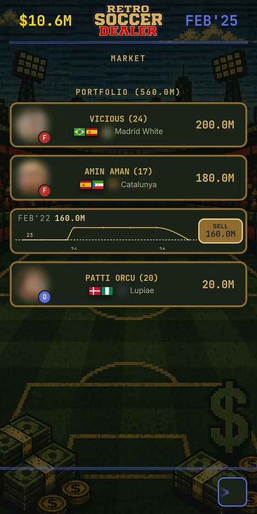

~/projects/retro-soccer-dealer
LIVE · GOOGLE PLAY
Retro Soccer Dealer
Time travel, transfer markets and zero servers.
An offline-first Android game: monthly transfer markets, Play Billing and importable community datasets.